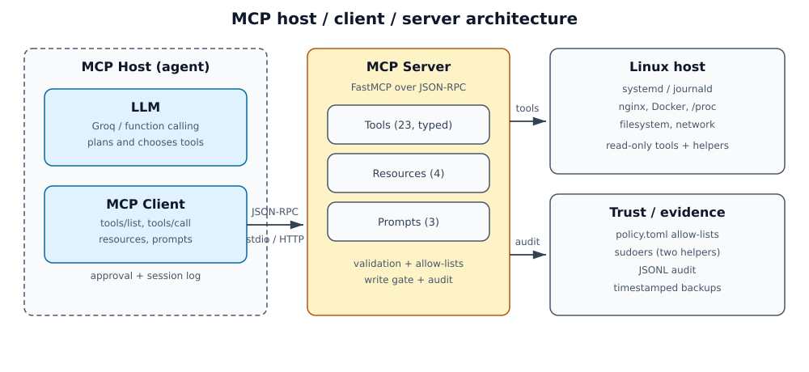
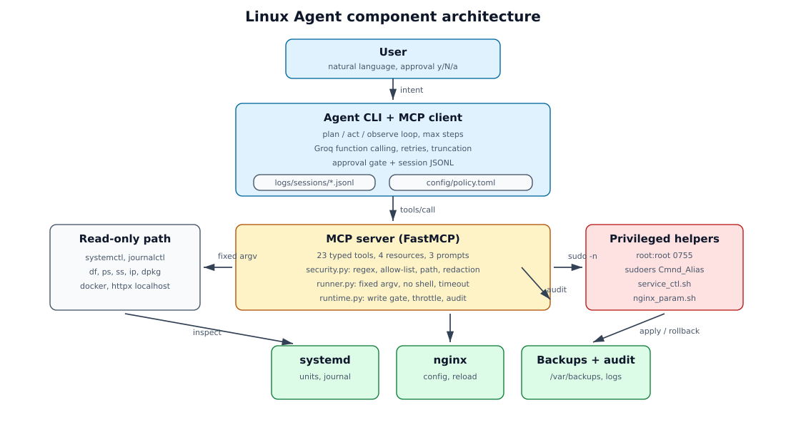
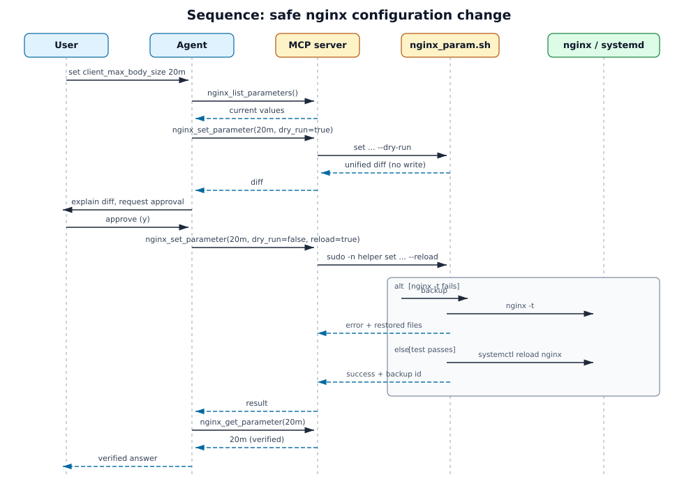
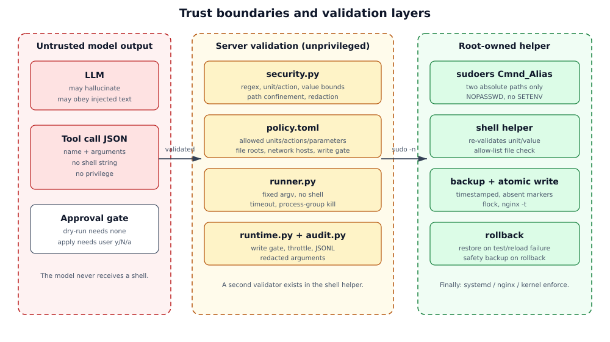
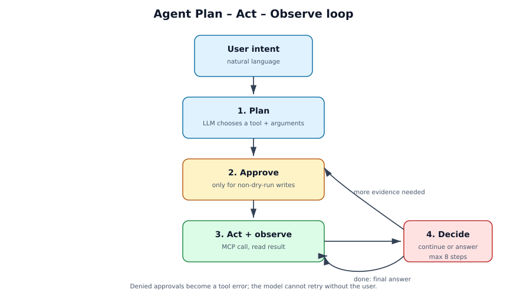
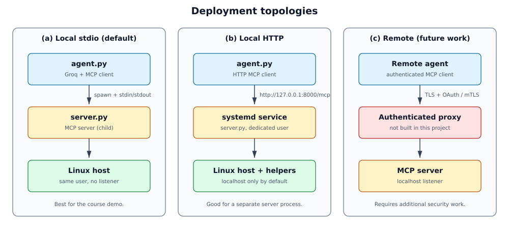

Course: Linux and Open-Source Software (LINUX OSS 2026)
Project direction: Agentic AI, MCP, Tool Use and Linux Automation
| Group member | Student ID | Contribution |
|---|---|---|
| [Full name] | [Student ID] | MCP server, tools, security |
| [Full name] | [Student ID] | Agent, demo, evaluation |
| [Full name] | [Student ID] | Report, slides, testing |
Lecturer: [Lecturer name]
Date: November 2026
We declare that this report and the accompanying source code are our own work. External ideas, specifications and software are acknowledged in the references. The project was tested on a real Ubuntu 26.04 host and in an isolated laboratory configuration. We did not use another group's code, and we did not hide failed experiments: the limitations section records what the system does not solve.
Signed: ____________________ Date: ____________
Linux administration is repetitive, stateful and risky: an operator has to inspect services, read logs, understand configuration contexts, change one value, validate the result and be ready to roll back. Large language models (LLMs) can explain such work, but a chat window cannot safely operate a machine. This project builds Linux Agent, an agentic system that connects a Groq-hosted LLM to an Ubuntu host through the Model Context Protocol (MCP). The system implements an MCP server with 23 typed tools, four resources/resource templates and three prompts; a small Plan–Act–Observe agent loop; a human approval gate; a JSONL audit trail; and two root-owned helper scripts that perform allow-listed systemd actions and safe nginx configuration changes.
The central design claim is that the language model should be treated as untrusted input.
The model never receives a shell. The server validates every argument, the shell helpers
validate again, and the operating system enforces a narrow sudoers rule. Configuration
changes are dry-run by default, create a timestamped backup, run nginx -t, and restore
the previous files automatically if validation or reload fails. The agent asks for
explicit approval before any non-dry-run change and records every step.
The implementation is evaluated with 29 automated tests, an end-to-end MCP stdio test, an
isolated write/rollback laboratory, and a real-host demonstration. All tests pass. On the
test host, read-only tool calls take roughly 6–65 ms and a complete LLM turn takes about
2.6 s including server startup. The laboratory applies a client_max_body_size change,
verifies it, creates a backup, and rolls it back without root. The report also analyses
residual risks: prompt injection, approval fatigue, HTTP authentication, audit integrity
and the limits of syntax-only validation. The result is a reproducible teaching platform
for agentic Linux automation, not a production control plane.
Keywords: agentic AI, Model Context Protocol, MCP, Linux, systemd, nginx, tool use, human-in-the-loop, least privilege, audit.
| Abbreviation | Meaning |
|---|---|
| AI | Artificial Intelligence |
| API | Application Programming Interface |
| CLI | Command-Line Interface |
| HTTP | Hypertext Transfer Protocol |
| JSON-RPC | JSON Remote Procedure Call |
| LLM | Large Language Model |
| MCP | Model Context Protocol |
| NFR | Non-functional Requirement |
| OWASP | Open Worldwide Application Security Project |
| RBAC | Role-Based Access Control |
| stdio | Standard input/output |
| TOML | Tom's Obvious Minimal Language |
A Linux server exposes a large, stateful surface: systemd units, journal logs, nginx
configuration files, HTTP endpoints, packages, containers and network sockets. A routine
task such as "increase the maximum upload size" is not a single command. The operator must
find the effective configuration, understand whether the directive belongs to the main,
events, http, server or location context, change it without breaking the file,
validate it with nginx -t, reload the service, verify the result, and keep a rollback
path. Copying commands from a tutorial ignores most of these steps.
Agentic AI offers a different interface. Instead of asking an operator to translate intent into commands, an LLM can plan a sequence of tool calls, observe the results and revise the plan. The missing piece is a controlled tool boundary. Giving an LLM an unrestricted shell is both unsafe and unreproducible. The Model Context Protocol (MCP) standardises that boundary: a host (the agent) connects to a server, discovers typed tools, calls them with JSON arguments and receives structured results.
This project asks a practical question:
Can a small, open, auditable MCP server let an LLM perform useful Linux administration while keeping the human in control and the blast radius small?
The answer is a working system, not a slideware architecture. Linux Agent runs on a real Ubuntu host, reads real systemd and nginx state, and can change an allow-listed nginx parameter through a root-owned helper after explicit approval.
The project addresses four problems:
The concrete objectives are:
In scope
worker_processes, worker_connections,
client_max_body_size, keepalive_timeout, client_body_timeout, send_timeout,
gzip and server_tokens.Out of scope
| Deliverable | Location |
|---|---|
| MCP server and tools | linux_agent/, server.py |
| Agent CLI | linux_agent/agent/, agent.py |
| Privileged helpers | scripts/nginx_param.sh, scripts/service_ctl.sh |
| Installer and sudoers validation | scripts/install_privileged.sh |
| Policy | config/policy.toml |
| Tests | tests/ (29 tests) |
| Final report | docs/report.md |
| Slides | docs/slides.md |
| Demo script and evidence | docs/demo.md, docs/evidence/ |
Chapter 2 explains the background: systemd, nginx contexts, agentic AI and MCP. Chapter 3 derives requirements and risks. Chapter 4 presents the architecture and security model. Chapter 5 describes the implementation. Chapter 6 reports the test plan, results and performance. Chapter 7 discusses limitations and future work. Chapter 8 concludes.
systemd is the service manager on modern Ubuntu. A unit is described by a file such as
/lib/systemd/system/nginx.service; systemctl status shows state and recent log lines,
systemctl start|stop|restart|reload changes state, and journalctl -u reads the journal.
systemctl is-active gives a machine-friendly state.
Two properties matter for automation. First, unit names are not arbitrary strings: they
have a grammar and must never be confused with command-line options. A leading - or a
value containing ; can change the meaning of a command. Second, actions are not equal:
reload is usually graceful, restart interrupts connections, and stop takes the
service down. The agent must know which action the user asked for and must not silently
substitute a more destructive one.
nginx is a web server and reverse proxy. Its configuration is a tree of contexts. A
directive is legal only in specific contexts. For example, worker_processes is a main
context directive, worker_connections belongs in events, and client_max_body_size,
keepalive_timeout, gzip and server_tokens are valid in http (and some also in
server/location). Ubuntu's default nginx.conf includes
/etc/nginx/conf.d/*.conf inside the http block, so a managed drop-in is the cleanest
way to change HTTP-level parameters.
nginx -t parses the configuration and reports syntax errors, but it does not prove that a
change is semantically desirable. A value can be syntactically valid and still be a bad
operational choice. This is why the design keeps a human approval step even after
validation.
An LLM alone maps text to text. An agent adds a loop:
This is often called a ReAct-style loop. Modern LLM APIs expose function calling: the caller supplies JSON schemas for tools, the model returns a tool name and JSON arguments, and the caller executes the tool and appends the result to the conversation. The model does not execute anything itself. This separation is the foundation of the security model in this project.
Agentic systems are useful when the environment changes between steps, when the task requires multiple sources of truth, and when the correct next step depends on the result of the previous one. Linux administration fits all three: service state, logs, configuration and network probes interact.
MCP is an open protocol that standardises how an AI application (the host) discovers and calls capabilities exposed by a server. The host contains one or more clients; each client maintains a session with a server. The protocol uses JSON-RPC 2.0 messages.
MCP defines three server primitives:
readOnlyHint and destructiveHint help the
client reason about risk.The two common transports are stdio (the client spawns the server process and speaks over stdin/stdout) and Streamable HTTP (the server exposes an HTTP endpoint, optionally with server-sent events). stdio is ideal for a local desktop agent; HTTP is useful when the server runs as a service.
The official Python SDK provides FastMCP, which turns decorated Python functions into
MCP tools, resources and prompts. It generates JSON Schema from type hints and docstrings,
which keeps the tool contract close to the implementation.

Figure 1. A host (the agent) contains an MCP client; the client talks JSON-RPC to an MCP
server; the server owns the actual tools and data. Figure source: docs/diagrams/.
A shell script can automate one task, but it is not discoverable by a model, has no schema, and usually has no policy boundary. MCP adds:
tools/list and receives names, descriptions and
JSON Schemas.The trade-off is more moving parts and a new protocol surface. For a teaching project, that surface is valuable because it makes the security boundary explicit.
Linux Agent deliberately does not replace Ansible. It explores the layer above: how a model can choose and parameterise safe operations, with a human approving the risky ones.
| Actor | Goal |
|---|---|
| Student operator | Inspect and demonstrate Linux services from natural language |
| Teaching assistant / lecturer | Verify that the implementation is real, reproducible and safe |
| System administrator | Delegate a narrow, auditable operation without giving a shell |
| Security reviewer | Trace every privileged path and test the boundaries |
Primary use cases:
| ID | Requirement | Priority |
|---|---|---|
| FR1 | Expose host identity, uptime, CPU, memory, disk and systemd state | Must |
| FR2 | Expose systemd status, journal logs, failed units and service lists | Must |
| FR3 | Expose network interfaces, routes, DNS and listening ports | Must |
| FR4 | Expose nginx version, config test and managed parameter values | Must |
| FR5 | Allow only allow-listed units and actions | Must |
| FR6 | Change only allow-listed nginx parameters with validated values | Must |
| FR7 | Back up configuration before a change and restore on failure | Must |
| FR8 | Dry-run configuration and service changes | Must |
| FR9 | Require human approval for non-dry-run writes | Must |
| FR10 | Record every tool call in an audit log | Must |
| FR11 | Provide MCP resources and prompts in addition to tools | Should |
| FR12 | Support stdio and Streamable HTTP transports | Should |
| FR13 | Expose Docker container list and logs | Could |
| FR14 | Provide a reproducible lab demo without root | Should |
| FR15 | Provide an installer that validates sudoers with visudo |
Must |
| ID | Requirement | Acceptance criterion |
|---|---|---|
| NFR1 | Safety | No shell execution; all arguments validated at two layers |
| NFR2 | Security | A non-allow-listed unit or parameter is rejected before execution |
| NFR3 | Reversibility | A failed nginx -t restores the previous files automatically |
| NFR4 | Performance | Read-only tool calls under 500 ms on the test host |
| NFR5 | Usability | A new user can run the read-only demo in under five minutes |
| NFR6 | Portability | Runs on Ubuntu 24.04/26.04 with Python 3.11+ |
| NFR7 | Maintainability | Tools are separated by domain; policy is data, not code |
| NFR8 | Observability | Audit entries include timestamp, tool, args, result, duration, status |
| NFR9 | Reproducibility | Tests run without root and without changing the host |
| NFR10 | Documentation | README, report, slides and demo script are in English |
| Risk | Likelihood | Impact | Mitigation |
|---|---|---|---|
| Prompt injection asks for destructive command | Medium | High | No shell tool; fixed argv; allow-lists; approval |
| Model hallucinates a unit/parameter | High | Medium | Regex + allow-list at server and helper |
| Bad value breaks nginx | Medium | High | Value bounds; nginx -t; backup; automatic rollback |
| User edits a helper that sudo runs | Low | Critical | Root-owned 0755 helper; sudoers path restriction |
| Secret leaks into audit/LLM context | Medium | High | Redaction patterns; result truncation; local-only files |
| Agent changes config without consent | Medium | High | Dry-run default; CLI approval; write gate |
| HTTP endpoint exposed to network | Low | High | Bind localhost by default; document proxy/auth |
| Audit log tampering | Low | Medium | Append-only JSONL; can be shipped to remote syslog |
| Approval fatigue | Medium | Medium | Dry-run diffs; "always" only for one tool/session |
| Model provider outage | Medium | Low | Retries; clear error; read-only tools still work directly |
| Requirement | Design/implementation | Test evidence |
|---|---|---|
| FR1–FR3 | tools/diagnostics.py |
test_mcp_server, manual demo |
| FR4 | tools/nginx.py, nginx_param.sh list/get |
test_nginx_script, MCP test |
| FR5 | policy.toml, services.py, service_ctl.sh |
test_nginx_script service tests |
| FR6 | config.py parameter specs, nginx_param.sh |
test_security, test_nginx_script |
| FR7 | create_backup, restore_backup |
test_failed_config_test_*, rollback test |
| FR8 | dry_run=True defaults |
MCP test, lab demo |
| FR9 | MCPAgent.needs_approval, CLI prompt |
test_agent_policy |
| FR10 | Runtime.audited, AuditLog |
MCP test audit assertions |
| FR11 | server.py resources/prompts |
MCP test |
| FR12 | server.py, client.py |
Manual HTTP run |
| FR13 | container_list, container_logs |
Manual demo |
| FR14 | scripts/lab_demo.sh |
Lab transcript |
| FR15 | install_privileged.sh |
visudo -cf in installer |

Figure 2. The agent, MCP server, privileged helpers, policy and audit store. The model is outside the trust boundary; the server and helpers validate its output.
The system has five layers:
service_ctl.sh and nginx_param.sh, invoked through a narrow
sudoers rule.linux_agent/agent/cli.py parses arguments, loads the policy, opens either a stdio or
Streamable HTTP MCP session, lists tools, and runs the loop. The system prompt includes the
host name, whether writes are enabled, the allow-listed units and the managed parameters.
The prompt tells the model to inspect first, dry-run changes and never invent output.
The agent supports:
/tools, /reset, /audit, /policy, /quit;--prompt (repeatable);--list-tools without an API key;--auto-approve for supervised demos;--quiet to hide tool output previews.linux_agent/agent/client.py contains GroqLLM and MCPAgent. GroqLLM wraps
client.chat.completions.create with the MCP tools converted to OpenAI function schemas.
It retries rate limits, connection errors and timeouts with exponential backoff and runs
the blocking SDK call in a worker thread so the event loop stays responsive.
MCPAgent maintains the message history, calls the model, executes tool calls, appends
tool results, enforces the step limit and asks the approval callback when needed. Tool
results are truncated for the model to protect the context window; the full result remains
in the audit log.
linux_agent/server.py builds a FastMCP instance and registers three modules:
tools/diagnostics.py — read-only host, systemd, network, package, config, Docker and
nginx inspection.tools/services.py — service_action.tools/nginx.py — parameter inspection and controlled changes.Every tool is wrapped by Runtime.audited, which records the call. Tools return plain text
that is easy for an LLM to read and easy for a human to verify. Structured JSON is used for
the policy resource.
config/policy.toml is data, not code. It contains the write gate, audit path, output
limits, timeouts, allowed units/actions, helper paths, nginx parameter specifications, file
roots, network allow-list and agent settings. linux_agent/config.py loads it with
tomllib, applies environment overrides and exposes typed accessors.
Keeping policy in data makes the security review simple: a reviewer can read one file and know exactly which units and parameters are reachable.
The two helpers are the only privileged code:
scripts/service_ctl.sh validates an action and unit, checks
/etc/linux-agent/allowed-units, calls systemctl, records the result and prints the
new state.scripts/nginx_param.sh implements the course's "extra shell script" requirement:
validation, context-aware editing, backup, atomic write, nginx -t, reload, rollback and
a lock.scripts/install_privileged.sh copies them to /usr/local/libexec/linux-agent, sets
root:root 0755, writes the allow-list, generates a sudoers rule with a Cmnd_Alias,
validates it with visudo -cf, and installs it as 0440. The repository copies are not
trusted at runtime.
linux_agent/audit.py writes one JSON object per line. Each entry has a UTC timestamp,
event type, process ID, user, tool name, redacted arguments, status, duration and a result
preview. The agent writes a separate session transcript containing user messages,
assistant messages, tool calls, approvals and results. This separation is useful: the server
audit is the authoritative record of tool execution, while the session log is the
conversation context.

Figure 3. The agent inspects, dry-runs, asks for approval, applies through the helper, validates, reloads and verifies.
sequenceDiagram
autonumber
actor U as User
participant A as Agent
participant M as MCP server
participant H as nginx_param.sh
participant N as nginx
U->>A: "Set client_max_body_size to 20m"
A->>M: nginx_list_parameters()
M-->>A: current values
A->>M: nginx_set_parameter(20m, dry_run=true)
M->>H: set ... --dry-run
H-->>M: diff
M-->>A: diff
A->>U: explain diff, request approval
U-->>A: approve
A->>M: nginx_set_parameter(20m, dry_run=false, reload=true)
M->>H: sudo -n nginx_param.sh set ...
H->>H: validate, backup, atomic write
H->>N: nginx -t
alt test fails
H->>H: restore backup
H-->>M: error
else test passes
H->>N: systemctl reload nginx
H-->>M: success + backup id
end
M-->>A: result
A->>M: nginx_get_parameter(20m)
M-->>A: 20m
A-->>U: verified

Figure 4. Model output crosses into the server as untrusted JSON; the server crosses into the helper as validated arguments; the helper crosses into the kernel through sudo.
| Boundary | Input | Control |
|---|---|---|
| User → agent | Natural language | The user is the principal; the agent explains actions |
| Model → server | Tool name + JSON args | Schema, regex, allow-lists, value bounds |
| Server → helper | argv | Fixed binary, validated strings, no shell |
| Helper → kernel | systemctl, nginx |
sudoers command restriction, root-owned helper |
| Helper → filesystem | config paths | Fixed destinations, atomic writes, backups |
| Server/agent → log | Tool results | Redaction, preview truncation, local file permissions |
The tool catalog follows three rules:
disk_usage does not also read nginx configuration.dry_run parameter that defaults to
true and is documented in the description.| Tool | Type | Arguments | Side effect |
|---|---|---|---|
system_overview |
read | – | none |
service_status |
read | unit | none |
service_logs |
read | unit, lines, since | none |
list_services |
read | state, limit | none |
failed_units |
read | – | none |
disk_usage |
read | – | none |
process_top |
read | sort_by, limit | none |
network_overview |
read | – | none |
listening_ports |
read | – | none |
http_probe |
read | url | outbound HTTP to allow-listed host |
package_info |
read | name | none |
read_config |
read | path, max_lines | none |
container_list |
read | all_containers | none |
container_logs |
read | name, lines | none |
nginx_info |
read | – | none |
nginx_list_parameters |
read | – | none |
nginx_get_parameter |
read | parameter | none |
nginx_test_config |
read | – | none |
nginx_list_backups |
read | – | none |
nginx_diff_backup |
read | backup_id | none |
service_action |
write | unit, action, dry_run | systemd state |
nginx_set_parameter |
write | parameter, value, reload, dry_run | nginx config |
nginx_rollback |
write | backup_id, reload, dry_run | nginx config |
The design uses seven layers:
runner.py uses subprocess.Popen with an argv list, shell=False by
default, a minimal environment, a timeout and process-group kill. There is no tool that
accepts a command string.security.py validates unit names, action names, parameter
names, package names, container names, backup IDs, paths and time windows.policy.toml; the
nginx parameter must exist in the policy and the value must match the parameter regex
and semantic bounds.nginx -t, restores on failure, and optionally reloads. A file lock prevents concurrent
changes.--auto-approve is an
explicit opt-in for supervised demos.The Python layer is convenient and produces good error messages for the model. The shell layer is the last line of defence if the server is compromised, misconfigured or called by a different MCP client. Duplicating a small amount of validation is cheaper than trusting a single process.
An LLM can misunderstand intent. A dry run produces a diff and a clear "no change was made" message. It also gives the human a concrete artifact to approve. The lab and tests show that a dry run does not create the managed file.
set(parameter, value, dry_run, reload):
validate parameter is in the allow-list
validate value against the parameter regex and bounds
read the current value
render a candidate file:
http parameters -> managed drop-in 99-linux-agent.conf
main/events -> replace the existing directive in nginx.conf
if candidate == current: report "no change" and stop
if dry_run: show unified diff and stop
acquire the file lock
create a timestamped backup (including absent-file markers)
atomically replace the target
run nginx -t
if the test fails:
restore the backup
report failure
if reload requested:
systemctl reload nginx
if reload fails:
restore the backup, restore the old running config, report failure
print success, backup id, test output and diff
Two details are important:

Figure 5. The bounded loop. Non-dry-run writes pass through the approval gate before the MCP call; a denial is returned to the model as a tool error.
run_turn(user_text):
append user message
for step in 1..max_steps:
turn = LLM.complete(messages, tool_schemas)
append assistant message (content + tool calls)
if no tool calls: return content
for each tool call:
parse JSON arguments
if the tool is mutating and not a dry run:
ask the user; if denied, append DENIED and continue
result = MCP.call_tool(name, args)
truncate result for the model
append tool result
return "stopped after max steps"
The loop is deliberately bounded. It does not implement recursive planning or a separate critic model, because the project's focus is the tool boundary and the safety properties, not autonomous planning quality.

Figure 6. (a) Local stdio: the agent spawns the server. (b) Local HTTP: the server runs as a service; the agent connects to localhost. (c) Remote: an authenticated reverse proxy is required and is outside the current scope.
127.0.0.1:8000 by default. It is useful for demonstrating a
separate server process and for a future web UI.deploy/. The service runs as a dedicated user, and
the sudoers rule allows only the two helpers. Because the service needs sudo, the example
does not set NoNewPrivileges=yes; that hardening option would block sudo itself.| Decision | Alternative | Reason |
|---|---|---|
| Shell helpers for privileged work | Python systemctl calls |
Small, reviewable, easy to run under sudo; demonstrates the course requirement |
| Managed drop-in for HTTP parameters | Rewrite arbitrary config files | Avoids touching unrelated includes; clear ownership |
Fixed nginx main-file editing for worker_* |
Generic config parser | Configuration contexts are hard; refusing to guess is safer |
| Groq OpenAI-compatible API | Local model | Fast, free tier, reliable function calling on the test host |
| Text results | Structured JSON | Easier for the LLM and the human; JSON is used where structure matters |
| No arbitrary shell | "Just run this command" tool | An unrestricted shell would invalidate the security model |
| Item | Value |
|---|---|
| OS | Ubuntu 26.04.1 LTS (Resolute Raccoon) |
| Kernel | 7.0.0-43-generic |
| systemd | 259 |
| Python | 3.14.4 |
| MCP SDK | mcp 1.30.0 (FastMCP) |
| LLM | Groq openai/gpt-oss-20b |
| nginx | 1.28.3 (Ubuntu) |
| Docker | available on the test host |
The project uses only the Python standard library plus mcp, groq, python-dotenv and
httpx. httpx is used by the local HTTP probe and is already a dependency of the MCP
SDK.
linux_agent/
├── agent/
│ ├── cli.py # argparse, interactive loop, approval prompt
│ └── client.py # GroqLLM, MCPAgent, session openers
├── tools/
│ ├── diagnostics.py # 20 read-only tools, resources
│ ├── services.py # service_action
│ └── nginx.py # nginx tools and resource
├── audit.py # JSONL audit writer
├── config.py # policy loader, typed parameters, env overrides
├── runner.py # no-shell subprocess runner, privileged invocation
├── runtime.py # write gate, throttle, audit decorator
├── security.py # validation, redaction, path confinement
└── server.py # FastMCP registration, resources, prompts, main()
The root server.py and agent.py are thin compatibility wrappers so that the original
starter commands still work. The real implementation lives in the package.
create_server() loads the policy, creates an AuditLog and a Runtime, instantiates
FastMCP, and calls the three register() functions. A representative tool:
@mcp.tool(annotations=READ_ONLY)
@rt.audited
def disk_usage() -> str:
"""Show filesystem usage in human-readable form (read-only)."""
result = run(["df", "-hT", "-x", "squashfs"], timeout=cfg.read_timeout)
return truncate_bytes(result.output, cfg.max_output_bytes)
The decorator order matters: @mcp.tool sees the wrapper produced by @rt.audited, and
functools.wraps preserves the name, docstring and signature, so FastMCP still generates
the correct JSON Schema. The wrapper records arguments, result, status and duration.
Resources are registered with @mcp.resource:
@mcp.resource("linux://system/summary", mime_type="text/plain")
def system_summary_resource() -> str:
return system_overview()
Prompts are registered with @mcp.prompt. The change_nginx_parameter prompt encodes the
safe workflow (inspect → dry-run → explain → approve → apply → verify), which improves
model behaviour without hard-coding a scripted conversation.
The diagnostics module uses fixed commands:
system_overview reads /proc and /etc/os-release directly, avoiding dependencies.service_status runs systemctl status with --no-pager -l -n 15.service_logs runs journalctl with a validated --since value and a line cap.disk_usage runs df -hT -x squashfs.process_top runs ps with a fixed field list and an allowed sort key.network_overview runs ip -brief address and ip route, then reads resolvers.listening_ports runs ss -tulpn, falling back to ss -tuln if process information is
unavailable.read_config resolves the path against allowed roots, checks size, redacts secrets and
adds line numbers.http_probe accepts only allow-listed hosts, disables redirects and environment
proxies, and caps the body preview.package_info runs dpkg-query and apt-cache policy.docker ps and docker logs, with a name regex.A recurring pattern is validated arguments, fixed argv, bounded output. The model cannot turn a line count into an option because the line count is parsed as an integer and clamped.
service_action first validates the unit and action, then checks the policy. A dry run
returns the exact helper command without executing it. A real run acquires the write gate
and throttle, invokes sudo -n /usr/local/libexec/linux-agent/service_ctl.sh action unit,
then reads systemctl is-active and the last journal lines.
The helper independently validates the unit regex and reads
/etc/linux-agent/allowed-units. It uses systemctl action -- unit.service, records the
attempt and result with logger and in /var/log/linux-agent/actions.log, and prints the
new state. stop is allowed by policy but the agent asks for approval, because stopping a
service is destructive.
scripts/nginx_param.sh is the largest shell component. Its command surface is:
nginx_param.sh list
nginx_param.sh get <parameter>
nginx_param.sh set <parameter> <value> [--dry-run] [--reload]
nginx_param.sh test
nginx_param.sh status
nginx_param.sh list-backups
nginx_param.sh diff-backup <backup-id>
nginx_param.sh rollback <backup-id> [--dry-run] [--reload]
Key implementation choices:
/etc/nginx/conf.d/99-linux-agent.conf. The helper
parses the existing managed values, updates the requested key, and regenerates the file
in a stable order. This avoids duplicate directives and keeps unrelated files untouched.worker_processes, worker_connections) are edited in
nginx.conf by an awk script that replaces the first uncommented directive, preserving
indentation. If the directive is absent, the helper fails rather than guessing a context.The helper creates a temporary file in the destination directory, copies permissions and
ownership from the existing file, then mvs it into place. This avoids a partially written
configuration if the process is interrupted.
A backup is a directory under /var/backups/linux-agent/nginx/<timestamp>-<pid>/ with:
meta action=set, parameter=..., old=..., new=..., created=..., host=...
files.map original path <TAB> saved file
absent.map original paths that did not exist before the change
nginx.conf copy of the main file, if present
dropin.conf copy of the managed drop-in, if present
The absent.map is what makes rollback correct for a first-time change: a failed test
removes the newly created drop-in instead of leaving it behind.
Values are validated twice: the Python NginxParameter.validate method and the shell
validate_value function. Bounds are explicit:
| Parameter | Rule |
|---|---|
worker_processes |
auto or 1–64 |
worker_connections |
128–65535 |
client_max_body_size |
0 or a size with k/m/g suffix, at most 10g |
keepalive_timeout |
0–600 s |
client_body_timeout |
0–300 s |
send_timeout |
0–300 s |
gzip |
on/off |
server_tokens |
on/off |
After the write, nginx -t must pass. If it fails, the helper restores the backup and exits
non-zero. If a reload was requested and fails, it restores the backup, tests the old
configuration and attempts to reload the old configuration, then exits non-zero.
A flock on ${BACKUP_DIR}/.lock serialises changes. The server also serialises writes and
enforces a minimum interval. The two mechanisms are independent: the lock protects
concurrent processes, the throttle reduces accidental rapid-fire changes.
scripts/install_privileged.sh performs five steps:
visudo./usr/local/libexec/linux-agent with root:root 0755./etc/linux-agent/allowed-units and create backup/log directories.Cmnd_Alias for exactly the two helper paths.visudo -cf and install as root:root 0440.The generated rule is:
Cmnd_Alias LINUX_AGENT_HELPERS = /usr/local/libexec/linux-agent/nginx_param.sh, /usr/local/libexec/linux-agent/service_ctl.sh
alice ALL=(root) NOPASSWD: LINUX_AGENT_HELPERS
There is no wildcard command and no SETENV. The helper path is root-owned, so the invoking
user cannot replace it with a malicious script. uninstall_privileged.sh removes the rule
and helpers, and keeps logs/backups unless --purge is used.
GroqLLM.complete converts each MCP tool into:
{
"type": "function",
"function": {
"name": tool.name,
"description": tool.description,
"parameters": tool.inputSchema,
},
}
and sends the conversation with tool_choice="auto". The response is normalised into a
Turn(content, tool_calls) object. Only the fields the API expects are copied into the
assistant message; provider-specific fields such as reasoning traces are not fed back.
The approval decision is:
def needs_approval(tool, arguments):
if not is_mutating(tool):
return False
if tool.name in WRITE_TOOL_NAMES and arguments.get("dry_run", True):
return False
return not (auto_approve or tool.name in always_approved)
The CLI approval prompt supports:
Approve? [y]es / [N]o / [a]lways
always applies to one tool for the current session. It is not persisted. This is a
deliberate compromise between safety and approval fatigue.
The system distinguishes expected policy errors from execution failures:
unit not allow-listed, write disabled) raises PolicyError, which
FastMCP returns as a tool error with a readable message.ToolExecutionError with the helper output.LLMError; the CLI prints it and keeps the interactive loop
alive.systemctl or nginx cannot leak a
child process.The CLI prints the server policy, model, audit path, session path and tool list at startup. For each tool call it prints the name and arguments, then a preview of the result. The final answer is Markdown. This transparency is intentional: the operator should see what the agent did, not just the answer.
The evaluation uses five layers:
nginx/systemctl
binaries.The tests do not require root and do not modify /etc/nginx. The real-host demonstration is
separate and is recorded in the evidence file.
The full suite was run with:
cd /home/lcsang/linux-agent
.venv/bin/python -m unittest discover -v
Result:
Ran 29 tests in 4.394s
OK
| ID | Area | Case | Expected | Result |
|---|---|---|---|---|
| T01 | Unit validation | Accept nginx, nginx.service, getty@tty1.service |
Accepted | Pass |
| T02 | Unit validation | Reject -nginx, ../nginx, nginx;rm -rf /, nginx --now |
Rejected | Pass |
| T03 | Action validation | Accept RESTART as restart |
Normalised | Pass |
| T04 | Action validation | Reject mask, restart --now |
Rejected | Pass |
| T05 | Redaction | Redact db_password, api_key, Authorization, private key |
Redacted | Pass |
| T06 | Truncation | UTF-8 safe byte limit | Bounded | Pass |
| T07 | Path confinement | Allow config/app.toml, reject /etc/passwd |
Correct | Pass |
| T08 | Policy | Default write disabled, nginx allowed, 8 parameters | Correct | Pass |
| T09 | Policy | LINUX_AGENT_ALLOW_WRITE=1 enables writes |
Enabled | Pass |
| T10 | Parameters | Accept 20m, 0, auto, 4 |
Accepted | Pass |
| T11 | Parameters | Reject 20x, -1m, 99999g, 65, 2.5 |
Rejected | Pass |
| T12 | Approval | Read-only tool never needs approval | No prompt | Pass |
| T13 | Approval | Write tool dry-run needs no approval | No prompt | Pass |
| T14 | Approval | Write tool dry_run=false needs approval |
Prompt | Pass |
| T15 | Approval | Unknown mutating tool needs approval | Prompt | Pass |
| T16 | Approval | auto_approve bypasses prompt |
No prompt | Pass |
| T17 | nginx helper | list/get current values |
Correct | Pass |
| T18 | nginx helper | Dry run does not create the drop-in | No file | Pass |
| T19 | nginx helper | Apply HTTP parameter, create backup | Applied | Pass |
| T20 | nginx helper | Apply main and events parameters | Applied | Pass |
| T21 | nginx helper | Invalid value rejected | No change | Pass |
| T22 | nginx helper | Failed nginx -t removes a new file |
Removed | Pass |
| T23 | nginx helper | Failed nginx -t restores an existing file |
Restored | Pass |
| T24 | nginx helper | Rollback returns to the earlier value | Restored | Pass |
| T25 | nginx helper | Unknown parameter rejected | Rejected | Pass |
| T26 | service helper | Allowed restart | OK | Pass |
| T27 | service helper | nginx.service normalised |
OK | Pass |
| T28 | service helper | Disallowed unit | Rejected, no systemctl call | Pass |
| T29 | service helper | Invalid action/unit | Rejected | Pass |
| T30 | MCP stdio | 23 tools, annotations, resources, prompts | Correct | Pass |
| T31 | MCP stdio | Read-only tools work | Correct | Pass |
| T32 | MCP stdio | Dry-run nginx diff | Correct | Pass |
| T33 | MCP stdio | Write rejected when disabled | isError |
Pass |
| T34 | MCP stdio | Disallowed service unit | isError |
Pass |
| T35 | MCP stdio | Write path with unprivileged fake helper | Applied + audited | Pass |
The table lists 35 checks but 29 test methods: several methods assert multiple cases (parametrised loops) and the MCP test method covers T30–T34.
scripts/lab_demo.sh creates a temporary configuration tree, a fake nginx, a fake
systemctl and a wrapper that points the real helper at the lab. It then calls the real MCP
server through stdio and performs:
nginx_list_parameters — initial values.nginx_set_parameter(..., dry_run=true) — diff, no file created.nginx_set_parameter(..., dry_run=false) — apply, backup, nginx -t.nginx_get_parameter — verify 20m.nginx_list_backups — inspect the backup.nginx_rollback(..., dry_run=false) — restore with a safety backup.nginx_get_parameter — verify unset.Representative output (full transcript in docs/evidence/lab-demo.txt):
--- 2. Dry run: client_max_body_size 20m (no write) ---
DRY RUN: client_max_body_size = 20m (context: http)
...
+client_max_body_size 20m;
--- 3. Apply: client_max_body_size 20m (validated + backed up) ---
APPLIED: client_max_body_size = 20m (context: http)
applied client_max_body_size (unset) -> 20m (http) backup=20261114T151709Z-54754 reload=no
Config test: passed
--- 4. Verify the new value ---
Value: 20m
--- 5. Backups ---
id: 20261114T151709Z-54754
action=set
parameter=client_max_body_size
old=(unset)
new=20m
--- 6. Roll back 20261114T151709Z-54754 ---
rolled back to 20261114T151709Z-54754 (safety backup=... reload=no)
Config test: passed
--- 7. Verify the value after rollback ---
Value: unset
The final state shows the managed drop-in absent, as expected after rollback.
A read-only prompt was run against the actual Ubuntu host:
Give me a short health summary of this machine: host, uptime, disk usage and whether
nginx is running. Use the tools.
The agent called system_overview, disk_usage and service_status("nginx.service") and
produced a table with the hostname, uptime, root filesystem usage (89%), and nginx active
since 21:43:45. The answer quoted the tool output and did not invent values.
A second prompt asked for a dry-run change of client_max_body_size to 20m. The agent
called nginx_list_parameters and nginx_set_parameter(..., dry_run=true), showed the
diff to /etc/nginx/conf.d/99-linux-agent.conf, and did not create the file. This is the
intended behaviour when write mode is disabled.
The following numbers were measured on the test host with the MCP server over stdio. Each tool was called three times; the median is shown.
| Operation | Median | Notes |
|---|---|---|
system_overview |
14.8 ms | reads /proc and /etc/os-release |
disk_usage |
12.8 ms | df -hT |
service_status |
20.7 ms | systemctl status |
nginx_list_parameters |
62.7 ms | helper + file reads |
read_config |
8.7 ms | redaction + formatting |
http_probe localhost |
18.6 ms | nginx welcome page |
| Full LLM turn (one prompt) | ~2.6 s | includes server startup, tool listing and Groq |
The dominant cost is the LLM API, not Linux. Tool latency is well below the NFR4 target of 500 ms. A configuration apply in the lab took ~82 ms plus the server's 1 s write throttle; the throttle is a safety feature, not a performance problem.
The tests and manual review checked:
-nginx, nginx --now, nginx;rm -rf / are rejected by the
regex. A leading - is never passed to systemctl.read_config resolves the path and requires it to be under an
allowed root. /etc/passwd is rejected.client_max_body_size=20x, 99999g, worker_processes=65 are
rejected by both validators.LINUX_AGENT_ALLOW_WRITE=0, a non-dry-run nginx_set_parameter
returns an MCP error and does not invoke the helper.nginx -t failure removes a new file and restores an
existing one."tool": "nginx_set_parameter" and
"ok": true appear in the server audit.db_password, api_key, bearer tokens and private keys are
replaced.The remaining risks are discussed below.
The results support the main claim: an LLM can perform useful Linux inspection and a controlled configuration change through MCP without receiving a shell. The human approval step is visible in the CLI, and the shell helper's backup/test/rollback behaviour is independent of the model.
The evaluation also shows the limits of a small project:
nginx_list_parameters({"": ""}) in one run). FastMCP tolerates the extra key, but a
stricter client might not. Tool schemas should be respected, and future work should add a
schema-conformance check or a retry prompt.| Limitation | Why it matters | Possible improvement |
|---|---|---|
| No built-in HTTP authentication | Streamable HTTP is localhost-only by default; exposing it is unsafe | OAuth 2.1, mTLS, or an authenticated reverse proxy |
| LLM provider trust | Prompts and tool results leave the host | Local model option, redaction before sending, provider policy review |
| Approval fatigue | Users may press y without reading |
Show a compact diff, require typing the parameter name for high-risk changes |
| Audit is local and append-only | A root compromise can alter it | Remote syslog, hash chaining, signed audit entries |
| Redaction is heuristic | Unusual secret formats may leak | Structured config parsers, secret scanners, deny-by-default for sensitive files |
| nginx only | The config helper is service-specific | Add declarative adapters for other services with their own validators |
| Syntax validation only | nginx -t cannot know business intent |
Policy tests, canary deployment, health checks after reload |
| No multi-file transaction | A change is atomic per file, not across services | Transaction manager with a global rollback plan |
| Root helper risk | A bug in the helper runs as root | Minimal shell, ShellCheck, fuzzing, privilege drop, systemd sandboxing |
| Model nondeterminism | The same prompt may take different paths | Deterministic tool prompts, schema validation, replay tests |
systemd-run with DynamicUser, ProtectSystem,
PrivateTmp and a read-only filesystem for non-privileged tools.This project demonstrates a complete agentic Linux automation system built around MCP. The agent can inspect a real Ubuntu host, read systemd and nginx state, check a local HTTP endpoint, list containers, and change an allow-listed nginx parameter through a root-owned helper. The design treats the model as untrusted: no shell, typed tools, two validation layers, allow-lists, dry-run defaults, human approval, backups, automatic rollback and an audit trail.
The evaluation is reproducible. Twenty-nine automated tests pass, including an end-to-end MCP stdio test and a lab write/rollback test. A real-host run produced an evidence-based health summary and a dry-run diff without changing the host. The isolated lab applied a 20 MB upload limit, verified it, created a timestamped backup and rolled it back without root.
The main lesson is that the hard part of agentic Linux administration is not the LLM call. It is the boundary: deciding what the model may ask for, validating it independently, making changes reversible, and leaving a record. MCP provides a clean protocol for that boundary, and a small amount of careful engineering makes it usable for a course project.
| # | Tool | Read-only | Purpose |
|---|---|---|---|
| 1 | system_overview |
yes | Host, OS, kernel, uptime, load, CPU, memory, systemd |
| 2 | service_status |
yes | systemctl status + recent lines |
| 3 | service_logs |
yes | journalctl with validated window |
| 4 | list_services |
yes | Services by state |
| 5 | failed_units |
yes | Failed units |
| 6 | disk_usage |
yes | Filesystems |
| 7 | process_top |
yes | Top CPU/memory processes |
| 8 | network_overview |
yes | Interfaces, routes, DNS |
| 9 | listening_ports |
yes | Sockets |
| 10 | http_probe |
yes | Local HTTP(S) probe |
| 11 | package_info |
yes | Package version and APT policy |
| 12 | read_config |
yes | Confined, redacted file read |
| 13 | container_list |
yes | Docker containers |
| 14 | container_logs |
yes | Docker logs |
| 15 | nginx_info |
yes | Version, unit state, nginx -t |
| 16 | nginx_list_parameters |
yes | Current managed values |
| 17 | nginx_get_parameter |
yes | One value |
| 18 | nginx_test_config |
yes | Privileged nginx -t |
| 19 | nginx_list_backups |
yes | Backups |
| 20 | nginx_diff_backup |
yes | Backup diff |
| 21 | service_action |
no | Allow-listed systemd action |
| 22 | nginx_set_parameter |
no | Validated nginx change |
| 23 | nginx_rollback |
no | Restore a backup |
[security]
allow_write = false
audit_log = "logs/audit.jsonl"
max_output_bytes = 24000
read_timeout_seconds = 20
write_timeout_seconds = 60
min_write_interval_seconds = 1.0
[units]
allowed = ["nginx"]
actions = ["start", "stop", "restart", "reload"]
[helpers]
dir = "/usr/local/libexec/linux-agent"
nginx = "nginx_param.sh"
service = "service_ctl.sh"
use_sudo = true
[nginx.parameters.client_max_body_size]
context = "http"
pattern = "^(0|[1-9][0-9]{0,4}[kKmMgG]?)$"
description = "Maximum request body size, for example 1m or 20m (0 = unlimited)."
# Read-only
.venv/bin/python agent.py --list-tools
.venv/bin/python agent.py
# Install privileged helpers (once)
sudo scripts/install_privileged.sh --user "$USER" --units "nginx"
sudo -n /usr/local/libexec/linux-agent/nginx_param.sh list
# Enable writes for one session
LINUX_AGENT_ALLOW_WRITE=1 .venv/bin/python agent.py
# HTTP transport
.venv/bin/python server.py --transport streamable-http --host 127.0.0.1 --port 8000
.venv/bin/python agent.py --transport streamable-http --url http://127.0.0.1:8000/mcp
# Tests and lab
make test
bash scripts/lab_demo.sh
LAB_AGENT=1 bash scripts/lab_demo.sh
$ .venv/bin/python -m unittest discover -v
...
Ran 29 tests in 4.394s
OK
The full isolated-lab transcript is stored in docs/evidence/lab-demo.txt. The report's
Chapter 6 quotes the apply, verify, backup and rollback sections. The real-host read-only
run is reproducible with the prompt in Section 6.5.
| Member | Tasks | Evidence |
|---|---|---|
| [Member 1] | MCP server, diagnostics tools, security module | commits, tests |
| [Member 2] | Agent loop, approval gate, CLI, Groq integration | commits, demo |
| [Member 3] | nginx helper, installer, tests, report, slides | commits, report |
| Course requirement | Where it is addressed |
|---|---|
| Research the selected server service | Chapter 2 (nginx, systemd), Chapters 4–5 |
| Write an extra shell script to change service configuration parameters | scripts/nginx_param.sh, Section 5.6 |
| Understand compilation / recompilation (open-source direction) | Not the selected direction; the project uses the agentic AI direction |
| Deploy and manage services | MCP server, systemd helpers, nginx, Docker inspection |
| Research agentic AI architecture and tool use | Chapters 2 and 4 |
| Study MCP or another tool-integration mechanism | Sections 2.3 and 5.3 |
| Deploy an MCP server in Linux | server.py, stdio and HTTP transports |
| Develop several practical tools | 23 tools, Appendix A |
| Integrate the tools with an AI agent | linux_agent/agent/, Groq function calling |
| Demonstrate real interaction with Linux services | Chapters 6, docs/demo.md, evidence |
End of report.